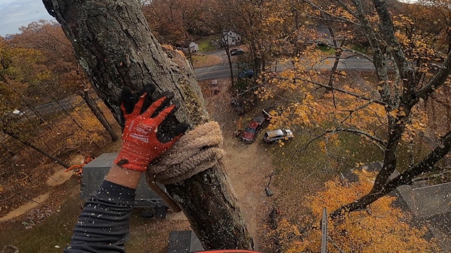
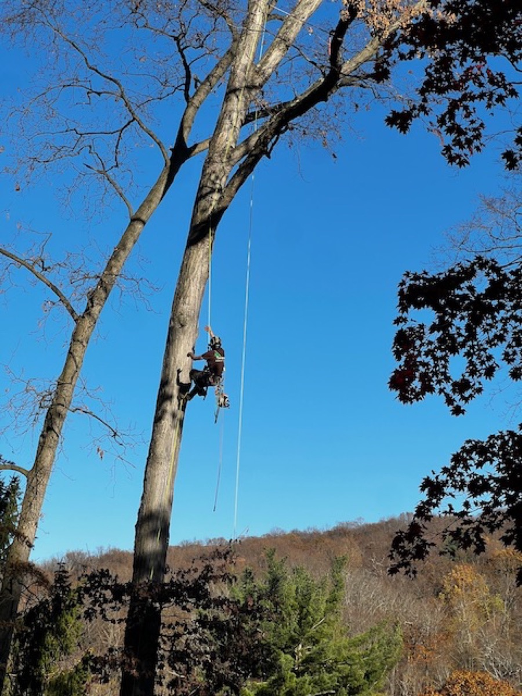
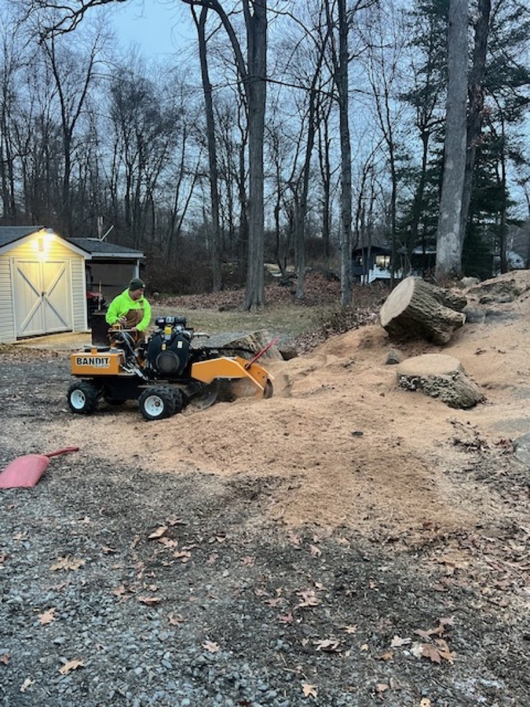
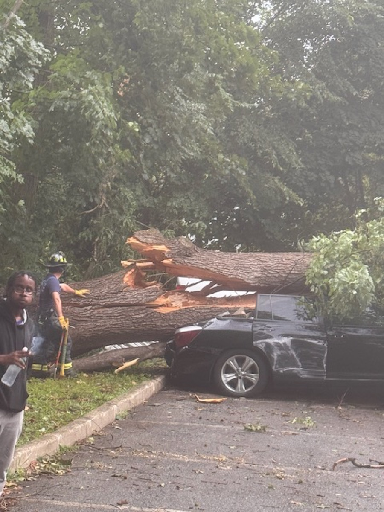
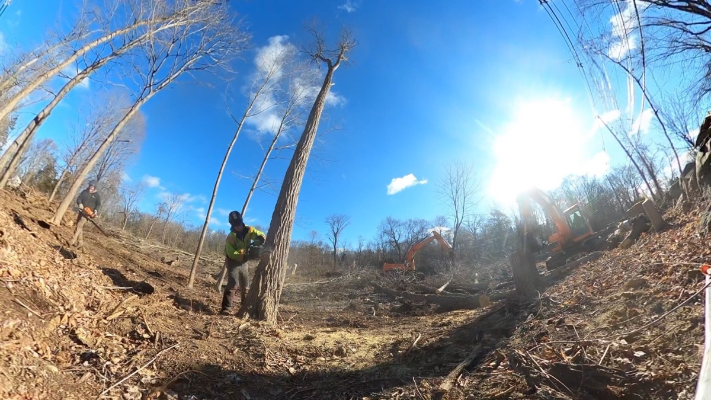
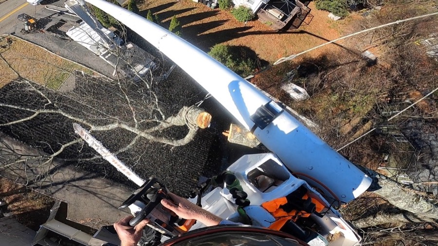
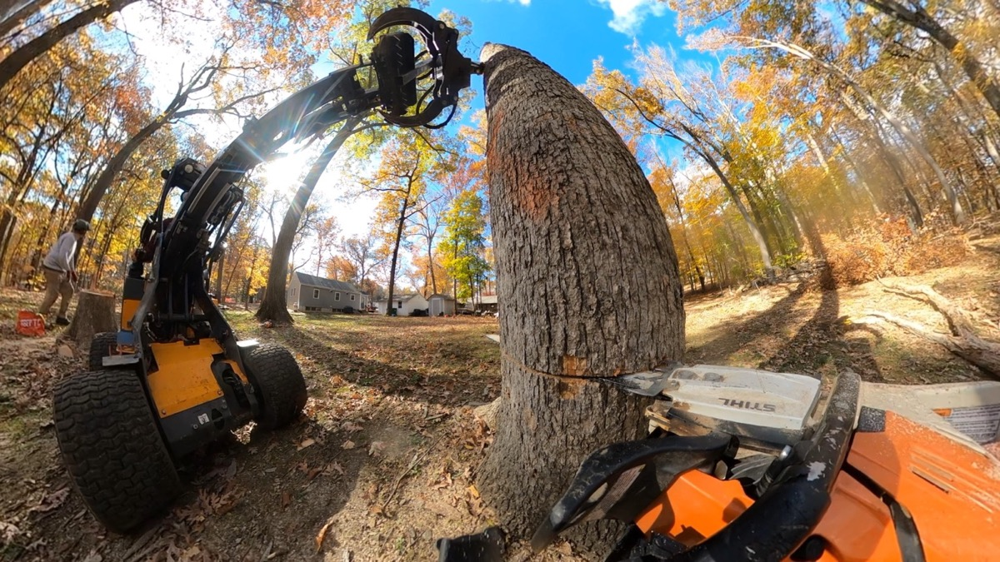

Professional Tree Service
Trusted by homeowners across Westchester and Putnam Counties for safe, reliable tree removal, pruning, stump grinding, and emergency services. Locally owned by two hands-on operators. Licensed, insured — and always free estimates.
Professional Tree Care Services
From hazardous tree removal to routine pruning and stump grinding, Second Nature Tree Service delivers safe, skilled work for homeowners throughout Peekskill and Northern Westchester.

Tree Removal
Safe removal of hazardous, dead, and unwanted trees. From backyard maples to large oaks near your home, our crew handles every job with precision.
Learn More →
Pruning & Trimming
Keep your trees healthy, safe, and beautiful with expert crown thinning, deadwood removal, structural pruning, and seasonal maintenance.
Learn More →
Stump Grinding
Eliminate tripping hazards and reclaim your yard. Our professional grinders remove stumps below grade quickly and affordably.
Learn More →
Emergency Tree Service
Storm damage and fallen trees demand a fast response. We provide emergency tree removal to restore safety when you need it most.
Learn More →
Land & Lot Clearing
Preparing land for construction, landscaping, or simply clearing overgrown brush. We handle projects of all sizes.
Learn More →
Additional Services
Crane-assisted removal, cabling & bracing, hedge trimming, tree health assessments, and more. See our full list of services.
View All Services →Why Homeowners Choose Second Nature
Owners On Every Job
You work directly with the owners on every job. No middlemen, no miscommunication — just accountability and consistent quality.
Licensed & Insured
Full general liability and workers compensation insurance on every project. Your property and our crew are always protected.
Local & Trusted
Based right here in Peekskill, we know the local trees, terrain, and regulations. Our reputation is built on referrals and repeat customers.

A Local Company That Treats Your Property Like Our Own
Second Nature Tree Service is a small, dedicated crew based in Peekskill, NY. We are not a franchise or a call center — when you reach out, you talk to the owners. When we show up, we bring the same team every time.
That personal approach means better communication, more careful work, and results that speak for themselves. Here is what you get when you hire us:
- Direct communication with the owners from estimate to cleanup
- Honest pricing with no hidden fees or surprise charges
- Experienced crew using professional-grade equipment
- Complete job site cleanup — we leave your property spotless
- Respect for your landscaping, structures, and neighbors
What Our Customers Are Saying
Our reputation is built on quality work and honest service. Here is what homeowners across the area have to say.
Had a massive oak taken down that was leaning toward our house. The crew was careful, professional, and cleaned up everything. The yard looked better than before they started. Highly recommend.
Second Nature removed three dead ash trees and ground all the stumps in one day. Prompt, fair pricing, and the owners were on site the whole time. Will definitely call again.
A large hemlock fell during a nor'easter and blocked our driveway. Called Second Nature and they were out that same morning. Fast, professional, and the price was very reasonable for emergency work.
Serving Westchester & Putnam Counties
Based in Peekskill on the east side of the Hudson River, we provide tree services throughout Northern Westchester and Putnam County.
Frequently Asked Questions
Tree removal costs vary based on tree size, location on your property, proximity to structures, and equipment needed. A small tree in an open yard costs less than a large oak near your home requiring crane work. We provide free on-site estimates so you get an accurate, no-surprise price. Call (914) 391-5233 to schedule yours.
Many Westchester and Putnam County municipalities require permits for removing trees above a certain diameter. For example, some towns require permits for trees over 8 inches in diameter. Requirements vary by town and we stay current on local regulations. We advise you on what is needed during your free estimate.
Tree removal can be done safely year-round. Late fall and winter are often ideal because bare trees are lighter, the ground is firmer, and there is less impact on surrounding vegetation. However, hazardous or dead trees should be addressed immediately regardless of season.
Yes. Second Nature Tree Service is fully licensed in both Westchester County (WC-32079) and Putnam County (PC-50644). We carry full general liability and workers compensation insurance on every job and provide certificates of insurance upon request.
Yes. We respond to emergency calls for fallen trees, storm damage, and hazardous situations as quickly as possible, including evenings and weekends. Call (914) 391-5233 for immediate assistance.
We are based in Peekskill, NY and serve all of Northern Westchester and Putnam Counties including Yorktown, Cortlandt Manor, Croton-on-Hudson, Briarcliff Manor, Chappaqua, Ossining, Bedford, Mount Kisco, Garrison, Cold Spring, Mahopac, Putnam Valley, Pound Ridge, North Salem, Armonk, and surrounding communities.